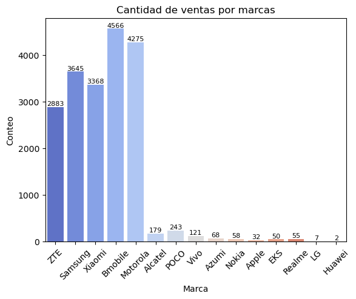
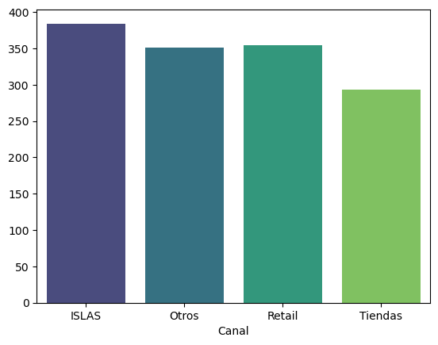
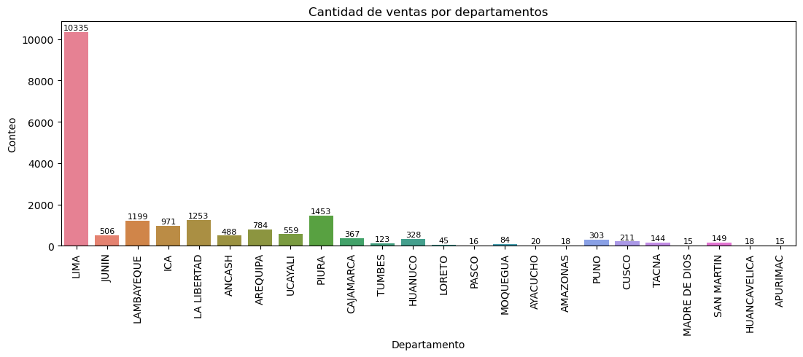

Ver en GitHub
Ver en GitHub
Analisis de Ventas de Moviles
Este trabajo colaborativo busca responder a una pregunta clave: ¿qué nos dicen los datos sobre el comportamiento de los clientes y
las ventas de teléfonos móviles?. A través de un análisis estructurado, se transformó información compleja en
insights claros y prácticos que ayudan a entender tendencias, preferencias y oportunidades de negocio.
Autores:
Características
Informe
Este proyecto analizó una base de datos de 19,552 transacciones de venta de equipos móviles para detectar ineficiencias y oportunidades de crecimiento. El hallazgo más crítico: A pesar de un alto volumen de ventas, el margen promedio global es negativo (-17.77), lo que sugiere que la estrategia actual prioriza el volumen sobre la rentabilidad, o que existen costos ocultos en ciertos canales que deben corregirse inmediatamente.Hallazgos Estratégicos (Insights de Negocio)
Al limpiar y procesar los datos con Pandas, descubrí tres pilares clave para la toma de decisiones:La Causa: El margen promedio es negativo. Esto indica que muchos equipos (probablemente de gama baja o en promociones agresivas) se están vendiendo a pérdida o con márgenes muy estrechos.
Acción Recomendada: Revisar urgentemente la estructura de precios y costos en el canal Retail, que concentra la mayoría de las operaciones.
Preferencia del Consumidor: El mercado es masivo y sensible al precio. Las gamas "Low" (Baja) y "Entry Smart" (Entrada) representan más del 66% de todas las ventas.
Oportunidad: Hay un nicho desatendido en la gama "High" y "Premium" que, aunque tiene menos volumen (solo 23 ventas Premium), podría ofrecer los márgenes positivos que la empresa necesita.
Visualización de Datos
El notebook alojado en GitHub incluye visualizaciones clave generadas con Seaborn y Matplotlib que permiten a la gerencia ver estos patrones rápidamente:📊 Distribución de Ventas por Marca (Countplot)

💰 Canal con mas costos (Barplot)

🗺️ Ventas por Departamento

Habilidades Técnicas Demostradas
Para lograr estos resultados, se aplicó un flujo de trabajo profesional de Ciencia de Datos:Este trabajo refleja como en trabajo colaborativo y aportando distintas ideas entre los integrantes se puede traducir información compleja en resultados claros y accionables, una habilidad clave para cualquier organización que quiera aprovechar el poder de los datos.
Tecnologías
| Python | Pandas |
| Matplotlib | Seaborn |
Visión general
El proyecto ofrece una mirada panorámica del mercado móvil, mostrando cómo las marcas compiten, cómo cambian las preferencias de los consumidores y qué tendencias emergen. La visión general transmite que los datos no son solo cifras: son una herramienta para comprender el comportamiento del mercado y anticipar oportunidades.
Resultados Obtenidos